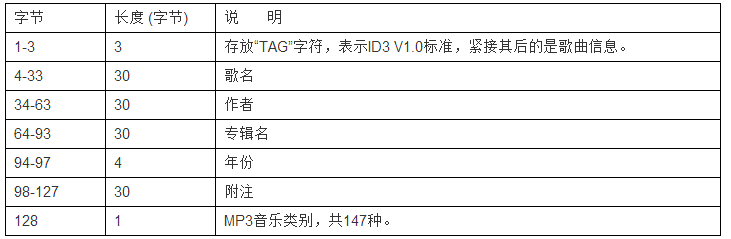
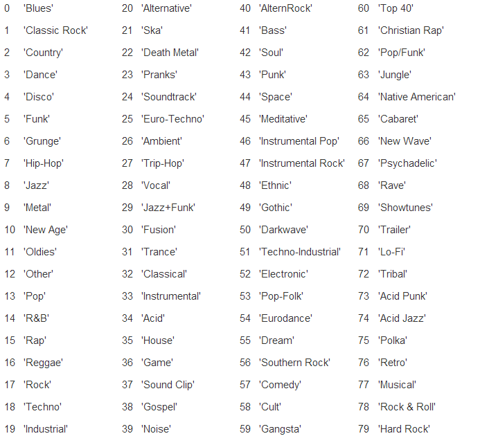
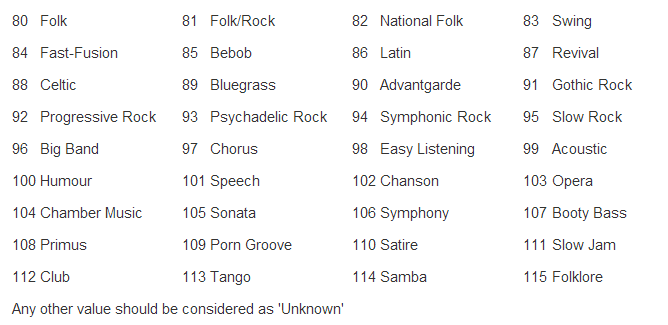

libmad
libmad一個開源的mp3解碼庫
#include<libmad-0.15.1b\mad.h>
#pragma comment(lib,"libmad.lib") //需要自己編譯libmad.lib
example
typedef struct _USER_DATA_
{
std::fstream fstream;
unsigned int write_sum;
unsigned int data_size;
bool init;
char buffer[BUFFER_LEN];
_USER_DATA_()
{
init=false;
write_sum = 0;
data_size = 0;
}
~_USER_DATA_()
{
if(fstream.is_open())
{
fstream.close();
}
}
void load(const std::wstring& file_path)
{
if(fstream.is_open())
{
fstream.close();
fstream.clear();
}
fstream.open(file_path,std::ios::out|std::ios::in|std::ios::binary);
fstream.seekg(0,std::ios::end);
data_size=(unsigned int)fstream.tellg();
data_size-=(unsigned int)128;
fstream.seekg(0,std::ios::beg);
std::fstream::pos_type t=fstream.tellg();
int x=0;
++x;
}
}USER_DATA,*LUSER_DATA;
enum mad_flow input_fun(void* lParam,mad_stream* stream)
{
LUSER_DATA data=(LUSER_DATA)lParam;
if(data->data_size > data->write_sum)
{
//未解壓數據大小
int un_size = stream->bufend-stream->next_frame;
//解壓數據大小
int de_size = BUFFER_LEN - un_size;
if(data->init)
{
data->write_sum+=de_size;
}
else
{
data->init=true;
}
if(un_size)
{
//更新代解碼緩衝區
memcpy(data->buffer
,data->buffer + de_size
,un_size);
}
data->fstream.read(data->buffer + un_size , de_size);
//mad_stream_buffer 指定要解碼數據 和 數據大小
mad_stream_buffer(stream,(const unsigned char *)data->buffer , BUFFER_LEN);
//繼續下次解碼
return MAD_FLOW_CONTINUE ;
}
//解碼完成停止操作
return MAD_FLOW_STOP;
}
std::fstream f("爱是没余地.wav",std::ios::out|std::ios::in|std::ios::binary|std::ios::trunc);
//量化為16位精度數據
int scale(mad_fixed_t sample)
{
/* round */
sample += (1L << (MAD_F_FRACBITS - 16));
/* clip */
if (sample >= MAD_F_ONE)
sample = MAD_F_ONE - 1;
else if (sample < -MAD_F_ONE)
sample = -MAD_F_ONE;
/* quantize */
return sample >> (MAD_F_FRACBITS + 1 - 16);
}
//保存解碼數據
enum mad_flow output_fun(void *,
mad_header const * header,
mad_pcm* pcm)
{
unsigned int nchannels, nsamples;
// pcm->samplerate contains the sampling frequency
int sample;
for(int i=0
;ilength //聲道信息數組長度
;++i)
{
sample =scale( pcm->samples[0][i]);
sample &= 0xFFFF;
f.write((char*)&sample,2);
//雙聲道 寫入另外一個聲道數據
if (2 == pcm->channels)
{
sample =scale( pcm->samples[1][i]);
sample &= 0xFFFF;
f.write((char*)&sample,2);
}
}
return MAD_FLOW_CONTINUE ;
}
int _tmain(int argc, _TCHAR* argv[])
{
USER_DATA data;
data.load(L"爱是没余地.mp3");
unsigned int err_code=0;
//定義一個解碼器
mad_decoder decoder;
//初始化解碼器
mad_decoder_init(&decoder //解碼器指針
,&data //傳遞給所有回調函數的自定義參數
,input_fun //用以指定代解碼數據的回調函數
,0 //處理返回解碼後每針 頭部信息
,0
,output_fun //用以返回解碼後每針 頭部信息 和解碼後的PCM數據
,0
,0
);
boost::timer t;
//執行解碼
err_code = mad_decoder_run(&decoder, MAD_DECODER_MODE_SYNC);
std::cout<<t.elapsed()<<std::endl;
//釋放資源
mad_decoder_finish(&decoder);
std::system("pause");
return 0;
}
注意
解碼後的數據是32位精度 需要轉化為16位
mp3格式
MP3文件分為三部分
TAG_V2(ID3V2)
Frame
TAG_V1(ID3V1)
ID3V2
可選 長度不固定 包含比ID3V1更多的信息
由一個 標籤頭 若干個標籤帧或一個擴展標籤頭組成
若存在ID3V2 標籤頭必須存在
#pragma pack(push)
#pragma pack(1)
typedef struct _ID3V2_
{
char tag[3]; //必須為 ID3
char ver; //版本號 ID3V2.3 記3
char revision; //次版本 ID3V2.3 記0
char flag; //標誌位 a 使用Unsynchronisation b 有擴展標籤頭 c 测试标签
char size[4]; //4字節 整個ID3V2大小-10 每字節只取後7位
}ID3V2,*LID3V2;
#pragma pack(pop)
標籤頭
Frame
ID3V1
長度
128字節 用於存儲 音樂信息
字節含義

音樂類型


注意
mp3格式相當不標準 一些軟件轉化的mp3 其ID3V2後可能有許多0之後才是frmae
frame 後許多0之後才是ID3V1